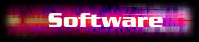

SF2LOAD v2.1 (April 23. 1999)
SF2LOAD is a small program that controls the SoundBlaster Live!/AWE32/SB32/AWE64 soundcard. It's main purpose is to load SoundFonts into the memory of the soundcard. There is of course nothing remarkable about that, you can achieve the same thing using the SoundFont - AudioHQ [SBLive] or AWE Control Panel [AWE] program included with your soundcard. The reason I made this program was that I got tired of manually loading a different set of SoundFonts for every song I made - it's a lot of clicking when you use the SoundFont - AudioHQ [SBLive] or AWE Control Panel [AWE], which are standard windows programs. SF2LOAD on the other hand is a command-line dos program which require no user interaction, and thus can be used in a dos batch file. I use SF2LOAD to automagically create a batch file containing all the SoundFonts the song uses, and I then run this bat file whenever I want to work with or listen to the song. SF2LOAD is also ideal for preparing distribution of songs that use SoundFonts.
SF2LOAD is run from the command-line, and the syntax is
SF2LOAD [<option>] [<bank number> <soundfont filename>]
Available Options:
-h Help
-d <filename> Create a bat-file for loading all soundfonts currently
in memory. Use full pathnames.
-dist <filename> Create a bat-file for loading all soundfonts currently
in memory. Use filenames only (suitable for distribution)
-distm <filename> Create a bat-file (filename.bat) for loading all soundfonts
in memory. Use filenames only and include a line to
play the MIDI file (filename.mid) using mediaplayer
-c <bankno> Clear the specified soundbank (remove it from memory)
-C Clear all soundbanks currently in memory
-n <deviceno> Set AWE device number (for users with multiple cards)
-l List all soundfonts currently in memory
-L List all soundfonts currently in memory (with filenames)
-p <bankno> List all (melodic) presets in bank
-i Print information about the AWE card
-v Enable verbose mode
-nt Do not print the program title
-t Print the program title
Examples
To load the soundfont vox.sf2 into bank 3, type
SF2LOAD 3 vox.sf2
To load the soundfont n:\music\sbk\drums\Sub Techno Drums.sf2 into bank 1, type
sf2load 1 "n:\music\sbk\drums\Sub Techno Drums.sf2"
To create a batch file to remember the soundfonts used in a song, type
sf2load -d songname.bat
The batch file created might look like this:
@ECHO OFF REM This bat file was created at Tue May 12 15:26:13 1998 by SF2LOAD v1.3 REM SF2LOAD is (c) 1998 Thomas Hammer thammer@pvv.org REM http://www.pvv.org/~thammer/HammerSound sf2load -t ECHO Clearing all User Banks sf2load -nt -C ECHO ECHO Loading SoundFonts sf2load -nt 1 "N:\music\sbk\4opfm.sf2" sf2load -nt 2 "N:\music\sbk\sizzle.sf2" sf2load -nt 5 "N:\music\sbk\dv01.sf2" ECHO
When you want to continue working on the song, or just listen to it. Run this batch file to load the neccessary SoundFonts
To distribute your new masterpiece (masterpiece.mid), do the following:
The batch file created, named masterpiece.bat, might look like this:
@ECHO OFF REM This bat file was created at Tue May 12 15:29:51 1998 by SF2LOAD v1.3 REM SF2LOAD is (c) 1998 Thomas Hammer thammer@pvv.org REM http://www.pvv.org/~thammer/HammerSound sf2load -t ECHO Clearing all User Banks sf2load -nt -C ECHO ECHO Loading SoundFonts sf2load -nt 1 "4opfm.sf2" sf2load -nt 2 "sizzle.sf2" sf2load -nt 5 "dv01.sf2" ECHO ECHO Starting MediaPlayer for playing MIDI file masterpiece.mid start mplayer.exe masterpiece.mid ECHO
First, read the license agreement below. If you agree, just click this link to download (sf2lv21.zip, 82kB). DOWNLOAD
Unzip the compressed file and place the file SF2LOAD.EXE in a directory in your search-path (you can put it in the c:\windows directory if you like),
You also need the SoundFont Management System from Creative Labs, available here. Please install this before starting to use SF2LOAD.
| v2.1 | 19990423 | Added an option to list preset names in a bank, as well as improved error-checking and a few bugfixes. |
| v2.0b | 19990117 | This version uses the 'SoundFont Management System', and is compatible with all SoundFont devices, including SBLive!, AWE64, AWE32 and SB32. The command-line interface is identical to v1.3. |
| v1.3 | 19980516 | A lot of bugs fixed & new options added: creating batch file suitable for distribution, soundcard information, listing of soundfonts, clearing soundbanks, support for multiple cards (somewhat limited yet when it comes to bat-file creation, I might improve it if there is sufficient demand) |
| v1.2b | 19980308 | Automatic creation of batch files, experimental beta version |
| v1.1 | 19971117 | Loads SoundFonts into AWE memory |
SF2LOAD will not work if any other program is currently accessing the soundcard. This includes some sequencers (but Vienna is ok). I don't know how to overcome this limitation. If anyone can give me a tip, please do so.
Feedback, such as bug-reports, questions or praise ;-), can be sent to thammer@pvv.org. Please include the word SF2LOAD in the subject of the mail.
SF2LOAD v1.3 (May 16. 1998)
For those of you wanting to use the old version using the aweman.dll, only compatible with AWE32/AWE64/SB32, here it is.
First, read the license agreement below. If you agree, just click this link to download (sf2ldv13.zip, 82kB). DOWNLOAD
SF2LOAD (the software) is copyright (c) 1997, 1998, 1999 Thomas Hammer (the author)
SF2LOAD is freeware for non commercial purposes. If the software is to be used for any commercial purpose, an agreement has to be made with the author in advance.
The author hereby grant permission to use, copy and distribute the software for any non commercial purpose, provided that existing copyright notices are retained in all copies and that this notice is included verbatim in any distribution. The software can not be sold (separately, together with other software, as a bundle) without written permission from the author (Thomas Hammer).
IN NO EVENT SHALL THE AUTHOR BE LIABLE TO ANY PARTY FOR DIRECT, INDIRECT, SPECIAL, INCIDENTAL, OR CONSEQUENTIAL DAMAGES ARISING OUT OF THE USE OF THIS SOFTWARE, ITS DOCUMENTATION, OR ANY DERIVATIVES THEREOF, EVEN IF THE AUTHOR HAS BEEN ADVISED OF THE POSSIBILITY OF SUCH DAMAGE.
THE AUTHOR SPECIFICALLY DISCLAIMS ANY WARRANTIES, INCLUDING, BUT NOT LIMITED TO, THE IMPLIED WARRANTIES OF MERCHANTABILITY, FITNESS FOR A PARTICULAR PURPOSE, AND NON-INFRINGEMENT. THIS SOFTWARE IS PROVIDED ON AN "AS IS" BASIS, AND THE AUTHOR HAS NO OBLIGATION TO PROVIDE MAINTENANCE, SUPPORT, UPDATES, ENHANCEMENTS, OR MODIFICATIONS.
[ HammerSound | Sounds | SoundDesign | Software | Info/Faq | MessageBoard | Links | Feedback | About ]